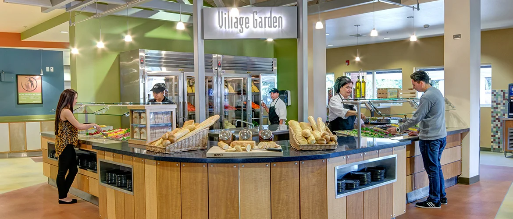
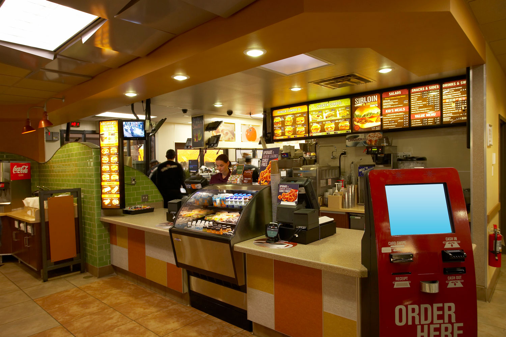
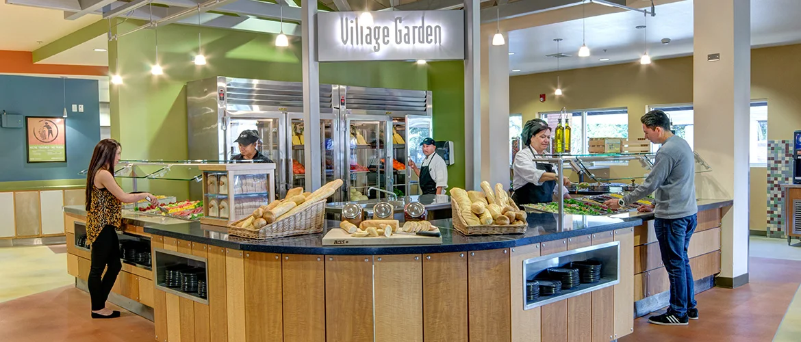
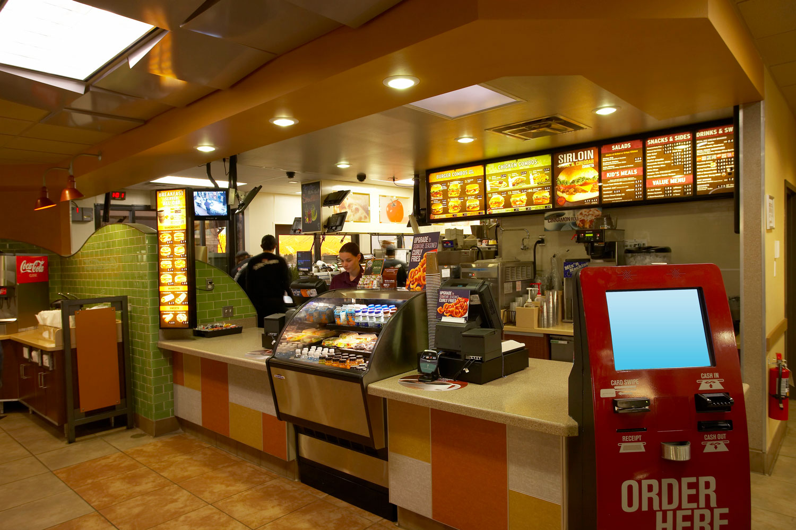
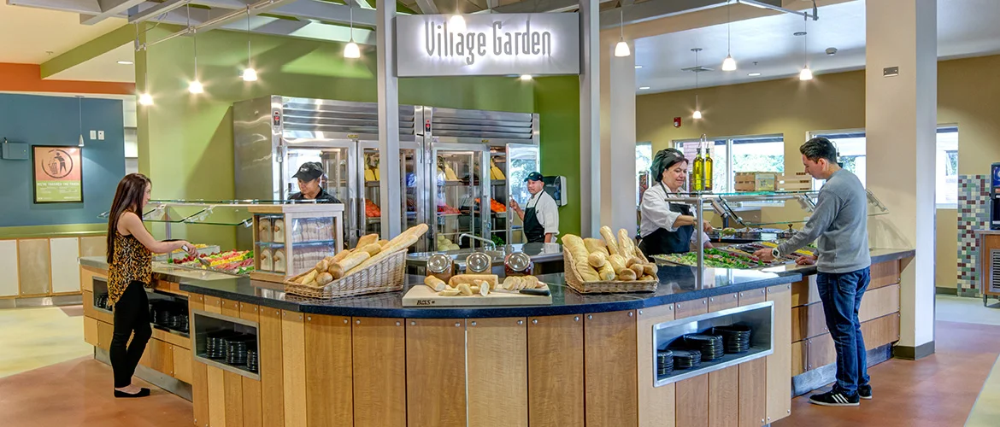
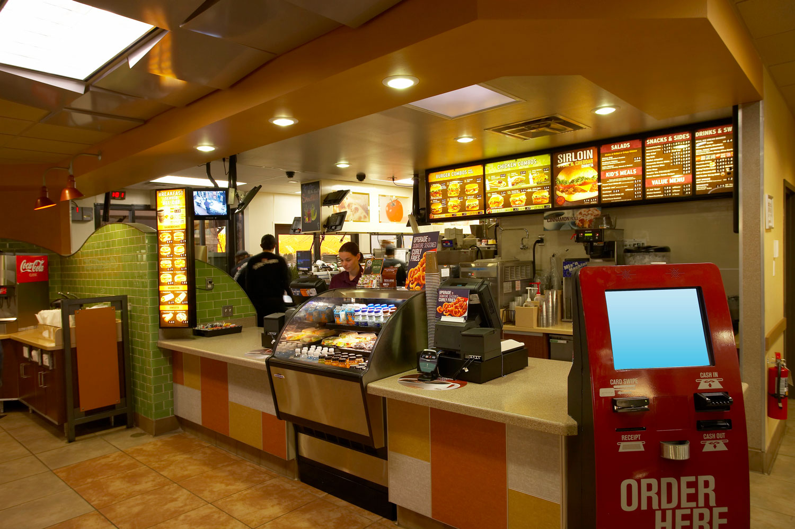

Jorge Tovar
Hello, my name is Jorge Tovar and I have had 3 jobs, which right now I have 2 present. My first Job was at Little Caesars, and I was scared to work there. I remember on my first day, I was scared to even walk in. The sensation of just walking in scared me to death. But I walked in. I remember my boss being there, welcoming me to my first ever job. On my first day, she set me on the computer to practice on taking customers orders. I was there for more than 6 hours, bored, tired, and wanting to go home. When I finished my first shift, I went straight home and took a nap. I also remember receiving my first paycheck, and felt "rich" for the first time in my life
My 2nd job was at Lothian Dining. Since I didn't have a job for more than 1 year and a half, I decided I finally wanted a job. Of course, I was already experienced, so I knew what to expect. The only difference was that I had previously worked at a fast food, and this is a all you can eat buffet. I wasn't as nervous as my first job though. I was welcomed to my 2nd job, and surprisngly did a good job on my first day. Till this day, everyday when I clock in, I walk in with a happy face, and always excited to do my work
I am currently a student at the University of California, Riverside, and im a 2nd year here. My first year experience at the University of California Riverisde was a bit frightening. Since my sister graduated from here, she would always give me tips on what to do, how to save money, etc. I took advantages of these tips she gave me and has helped me throughout my 1st year. As a business major, I knew I had to do a lot of math, so that is what im mostly doing at the moment. I plan on graduating 2026
Team Memer
Fast Food
• Took customers orders
• Flipping and prepping burgers
• Experience with maintaing a clean workplace
Team Member
• Responsible for maintaining a cleak workplace
• Consisted of Prepping food, Serving food, Washing Dishes, and Cleaning Tables
Team Member
• Made and prepped pizzas
• Handled machinery responsible for making pizzs
• Took customers orders
• Made dough
Education
UC Riverside
Orange Vista High School
University of California Riverside
Portfolio
 





